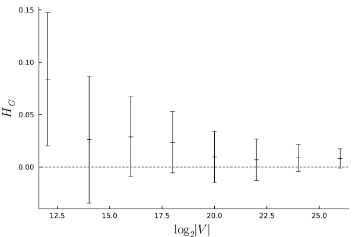
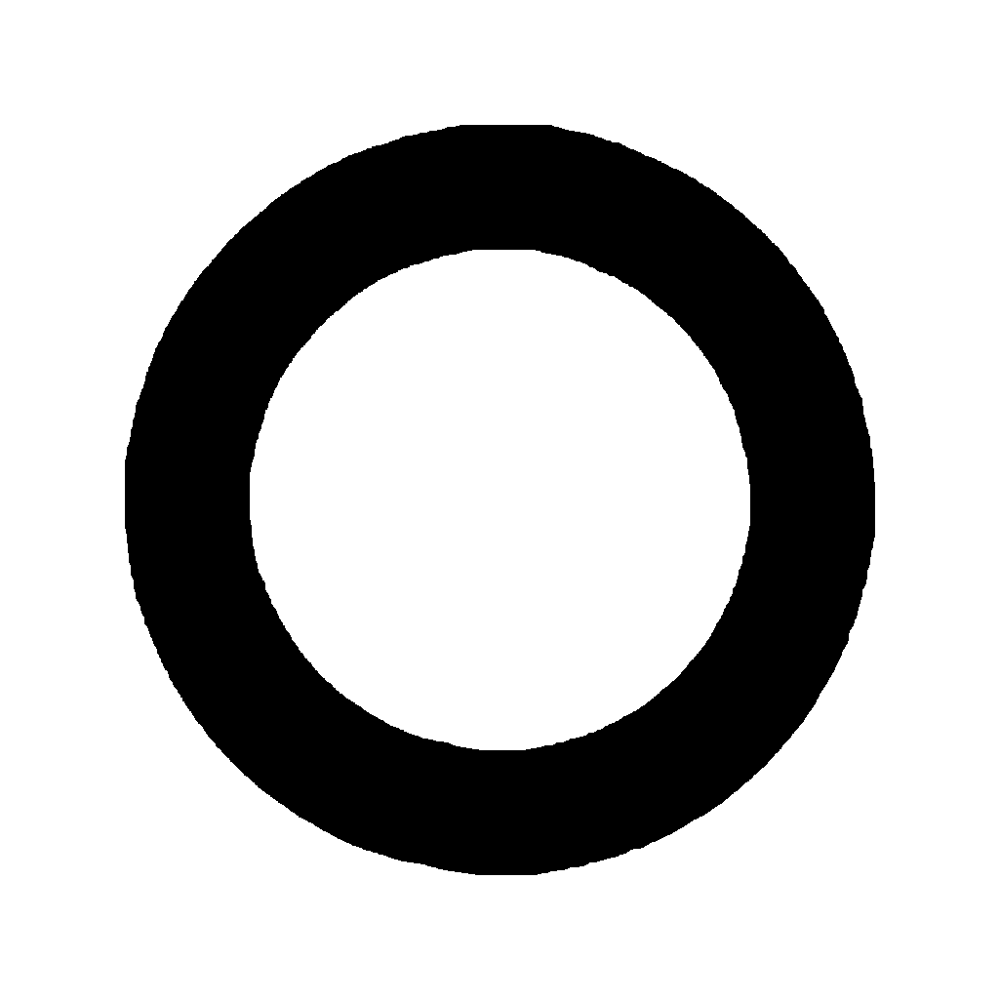

Imagine a digital universe where points in space are vertices in a graph, and the
distance between two points is the length of a shortest path between them. Can the graph
be structured whereby macroscopic observers living in the universe perceive isotropic
space, as we perceive in our universe?
Introduction
The distance \(d_G(u, v)\) between vertices in an undirected graph \(G = (V, E)\) is the
number of edges in a shortest path between \(u\) and \(v\). The distance \(d_2(u, v)\)
between points on the Euclidean plane is the \(2\)-norm of the line segment between \(u\)
and \(v\). Non-degenerate \(V \subset \mathbb{N}^2\) cannot satisfy \(d_G = d_2\) because
of the incommensurability of
the side and the diagonal of a square. Nonetheless, \(d_G\) can be used to approximate
\(d_2\); the approximation will be better or worse as a function of \(G\). How well can
\(d_G\) approximate \(d_2\), as \(|V|\) grows?
This question is difficult to answer in full generality. Let's consider the special case
of a graph whose vertices are the square grid \(\{1, \ldots, n\} \times \{1, \ldots,
n\}\). If we add edges between horizontal and vertical neighbors, we get \(d_1\)
taxicab distances, based on the \(1\)-norm. If we additionally add edges between
diagonal neighbors, then we get \(d_\infty\) chessboard distances, based on the
\(\infty\)-norm.
Left: Graph with taxicab distances.
Right: Graph with chessboard distances.
We have the nice property that \(d_1 \leq d_2 \leq d_\infty\), although neither one of
these constructs gives us a very good approximation of \(d_2\). It is easy to see that in
both cases, the divergences from \(d_2\) grow unboundedly with \(n\). In fact,
Fritz has proven that this divergence happens
for every distance function based on a periodic graph. But nothing prevents us
from considering aperiodic graphs. What happens if we start with a graph corresponding to
\(d_1\) and we add edges between only some diagonal neighbors? Let's call this
sort of graph, where \(d_G\) is meant to approximate \(d_2\), an
order-\(n\) Eugrid.
Certain formal properties of Eugrids are worth calling out at this point to avoid
confusion. All order-\(n\) Eugrids share the same square grid of vertices depicted
above. Edges corresponding to line segments of unit length are present in all Eugrids.
Eugrids vary in the presence or absence of edges corresponding to line segments of length
\(\sqrt{2}\). Edges corresponding to line segements of other lengths never appear.
It is notationally convenient This representation ignores graph symmetries
and is thus inappropriate for combinatoric calculations. to represent
order-\(n\) Eugrids by pairs of square bit matrices of order \(n-1\), which we refer to
as the diagonals and antidiagonals, respectively. Diagonals are edges corresponding to
line segments paralleling \(x=y\). Antidiagonals run cross-wise, paralleling \(x=-y\).
Eugrid Construction Heuristics
Let us consider for the moment only distances from the corner vertex \(\mathbf{1} := (1,
1)\) to other points. This lets us ignore the antidiagonals, which do not affect
distances between \(\mathbf{1}\) and other points, simplifying notation, discussion, and
visualization.
A very simple way to interpolate between taxicab and chessboard distances is to decide
on the presence or absence of each diagonal edge by sampling a random variate from a
Bernoulli distribution.
Circular arcs for random order-\(512\) Eugrids with \(p = 0, 1/8, \ldots, 1\).
This initially seems promising. If we drill down a bit we find that the best
fit Determined by Hamming distance from an ideal circular arc.
is obtained around \(p = 0.17\).
Circular arcs for random order-\(512\) Eugrids with \(p = 0.13, 0.14, \ldots, 0.21\).
If we inspect this result carefully however, we notice a problem.
Left: Circular arc for random order-\(512\) Eugrid with \(p = 0.17\).
Right: Minimum angular measurements; \(x, y\) is black where the graph
distance from \(\mathbf{1}\) to \(x, y\) equals the distance to \(1, y\).
The arc in the figure on the left above looks decently circular away from the axes, but
near the axes themselves there are straight lines, corresponding to a rather high degree
of anisotropy. As the figure on the right above shows, this anisotropy does not diminish
as the measurement scale increases Diminishing anisotropy with measurement
scale would manifest as sublinear growth in the width of the black region of the figure,
moving downwards. but remains more-or-less constant, and hence detectable by
a macroscopic observer.
This informal analysis suffices to demonstrate that Eugrids based on random Bernoulli
variates are poor models of the Euclidean plane. It is nonetheles encouraging to see that
such a simple procedure can yield reasonably circular arcs, at least away from the axes.
In order to devise better heuristics we must take a look at Eugrid microstructure. Let
\((x_v, y_v)\) be the Cartesian coordinates of vertex \(v\). Assuming \(x_u \leq x_v\) and
\(y_u \leq x_v\), This is always the case when \(u = \mathbf{1}\).
$$\mathbb{D}_1(u, v) := 1 + d_G(u, v)$$
is the graph distance between \(u\) and \(v + \mathbf{1}\) when the diagonal at
\(v\) This is the edge between \(v\) and \(v + \mathbf{1}\). is
present in the graph, and
$$\mathbb{D}_2(u, v) := 1 + \min(d_G(u, (x_v + 1, y_v)), d_G(u, (x_v, y_v + 1)))$$
is the distance when the diagonal at \(v\) is absent. Let us further define
$$L^u_i(v) := |d_2(u, v + \mathbf{1}) - \mathbb{D}_i(u, v)|.$$
\(L^u_1(v)\) is the loss (i.e. deviation from Euclidean distance) from \(u\) when the
diagonal at \(v\) is present, and \(L^u_2(v)\) is the loss from \(u\) when the diagonal
at \(v\) is absent. For example,
$$L^\mathbf{1}_i(v) = |\sqrt{x_v^2 + y_v^2} - \mathbb{D}_i(\mathbf{1}, v)|.$$
The \(\mathbf{1}\)-growth heuristic
A simple greedy approach to constructing Eugrids is to visit each potential diagonal at
\(v\) exactly once Taking care to visit the diagonal at \((x+1, y+1)\) after
we have visited the diagonals at \((x+1,y)\) and \((x,y+1)\). and decide
whether or not to add it to the graph based on whether \(L^\mathbf{1}_1(v)\) or
\(L^\mathbf{1}_2(v)\) is smaller When the two quantities are equal we add the
diagonal, based on the results of some preliminary ad hoc experiments.. We
refer to this approach as the \(\mathbf{1}\)-growth heuristic.
Visualization of diagonals generated by the \(\mathbf{1}\)-growth heuristic out to \(128,
128\). Pixels are black where \(L_1 \lt L_2\), white where \(L_1 \gt L_2\), and gray
where \(L_1 = L_2\).
\(\mathbf{1}\)-growth is a completely deterministic procedure, but the graph structure that it
produces is aperiodic, so Fritz's no-go theorem does not apply; arcs around
\(\mathbf{1}\) become increasingly circular as the radius increases.
Left: Circular arc for order-\(512\) Eugrid; \(\mathbf{1}\)-growth heuristic.
Right: Minimum angular measurements; \(x, y\) is black where the graph
distance from \(\mathbf{1}\) to \(x, y\) equals the distance to \(1, y\).
This demonstrates that the Eugrid representation can give us a very nice model of the
Euclidean plane, with minimal anisotropy, at least from a single perspective. The moment
we shift our perspective however, things begin to seem rather worse.
As above, but with the perspective shifted from \(\mathbf{1}\) by \(32, 64\).
Even worse than in the case of Bernoulli random variates, we see severe anisotropy around
the axes; back to the drawing board!
The \(\Gamma\)-growth heuristic
How can we make better Eugrids? We can generalize the \(\mathbf{1}\)-growth heuristic and
consider losses from more vertices than just \(\mathbf{1}\). What is left is to
specify which vertices, and how to weight their relative contributions, since
adding a particular diagonal edge may make some distances more Euclidean, and other less
so.
For the diagonal at \(v\), we can potentially calculate losses from all vertices \(u\)
such that \(x_u \leq x_v\) and \(y_u \leq y_v\). But since this both highly redundant and
scales badly with \(n\), we restrict ourselves to vertices along the left and upper edges
of the Eugrid, i.e.
$$\Gamma_v := \{u \mid x_u \leq x_v \land y_u \leq y_v \land \min(x_u, y_u) = 1\}.$$
We refer to this approach as the \(\Gamma\)-growth heuristic, and the resulting graphs as
\(\Gamma\)-Eugrids.
Vertices in \(\Gamma_v \cup \{v\}\) and line segments \(uv\) for \(u_\in \Gamma_v\) when
\(v = (5, 5)\).
This gives us nice coverage and is computationally tractable, but requires careful
normalization to balance relative contributions. In particular, we include two factors.
The first factor weights the contribution of vertex \(u\) by the angle \(\theta^u_v\ :=
\widehat{abc}\), where \(b := v + \mathbf{1}\) and \(a\) and \(c\) are the midpoints
between \(u\) and its two adjacent points in \(\Gamma_v\) Additionally
considering \((x_v+1, 1)\) and \((1, y_v+1)\) as adjacent points for the respective edge
cases of \(u = (x_v, 1)\) and \(u = (1, y_v)\)..
If \(x_u \gt 1\) and \(y_u = 1\), then \(a = (x_u - 0.5, 1)\) and \(c = (x_u + 0.5,
1)\).
Likewise, if \(x_u = 1\) and \(y_u \gt 1\), then \(a = (1, y_u - 0.5)\) and \(c = (1,
y_u + 0.5)\).
Finally, if \(x_u = y_u = 1\), then \(a = (1.5, 1)\) and \(c = (1, 1.5)\).
The second factor mitigates against axis-parallel anisotropy by assigning greater
importance to vertex \(u\) when the line between \(u\) and \(v\) is closer to
axis-parallel, and is defined as
Putting it all together, we have
$$L^\Gamma_i(v) := \sum_{u_\in \Gamma_v}{\theta^u_v \cdot \alpha^u_v \cdot L^u_i(v)}.$$
Diagonals generated by the \(\Gamma\)-growth heuristic out to \(16, 16\).
Visualization of diagonals generated by the \(\Gamma\)-growth heuristic out to \(1024,
1024\). Pixels are black where diagonals edges are present, and white where they are
absent.
As with the \(\mathbf{1}\)-growth heuristic, the graph produced by \(\Gamma\)-growth is
deterministically generated yet aperiodic. It has a rather more complex structure,
however, reminiscent of the patterns produced by
well-known cellular automata.
Left: Circular arc for order-\(512\) Eugrid; \(\Gamma\)-growth heuristic.
Right: Minimum angular measurements; \(x, y\) is black where the graph
distance from \(\mathbf{1}\) to \(x, y\) equals the distance to \(1, y\).
This approach gives us fairly circular arcs around \(\mathbf{1}\), with minimal
anisotropy.
As above, but with the perspective shifted from \(\mathbf{1}\) by \(32, 64\).
Furthermore, we obtain reasonable-looking results even when we shift our perspective.
Circular arcs of radius \(1000\) with \(1024 \times 1024\) spacing,
on an order-\(8193\) Eugrid; \(\Gamma\)-growth heuristic.
So far we have only considered the determination of the diagonal edges, corresponding to
line segments paralleling \(x=y\). We must also specify how the antidiagonals edges,
paralleling \(x=-y\), are determined. There are various possibilities that one could try,
but perhaps the simplest, and the one chosen here, is to simply flip the diagonals (in
their bit matrix representation) along the first axis. That is to say, an antidiagonal
edge exists between the vertices \((x+1, y)\) and \((x, y+1)\) iff a diagonal
edge exists between the vertices \((n - x, y)\) and \((n - x +1, y+1)\).
While the resulting graphs are technically non-planar, an equivalent planar graph may
be obtained, if desired, by simply doubling the Eugrid so that e.g.
is replaced by
.
Now we can at last make lovely circles, like so:
Circles of radius \(500\) with \(1024 \times 1024\) spacing, on an order-\(8193\)
Eugrid; \(\Gamma\)-growth heuristic.
At this point you might be getting a bit uncomfortable with developing and evaluating a
discrete model of the Euclidean plane by comparing pictures of vaguely circular blobs.
Fortunately, these sorts of models are well-suited to quantitative analysis, which we
will turn to in the next section.
Quantitative Analysis
Farr and Fink propose three tests for discrete
models aiming to capture Euclidean geometry. The tests were proposed for models of the
2-sphere, which Eugrids are not. It is nonetheless fairly straightforward to adapt them
to our setting, bearing in mind that the results obtained thereby will not be quite
apples-to-apples comparable with the original metrics.
Hausdorff dimension
As defined by this test measures the statistical
distribution of vertex eccentricity The eccentricity of a vertex is the
greatest distance between it and any other vertex. as the size of the graph
increases, in comparison to the distribution that one would expect based on Euclidean
distances. In particular we consider the distribution over random \(v_\in V\) of the
graph eccentricity
$$\epsilon_G(v) := \max_{u_\in V}d_G(u, v)$$
in comparison to the Euclidean eccentricity
$$\epsilon_2(v) := \max_{u_\in V}d_2(u, v).$$
For comparing Eugrids of different orders \(n\) we will consider the distribution of
$$H_G(v) := \frac{\epsilon_G(v) - \epsilon_2(v)}{\sqrt{n}}_.$$
In particular, we will wish to demonstrate that \(E[H_G]\) and \(SD[H_G]\) both converge
to zero as \(n\) increases. The choice of \(\sqrt{n}\) as the denominator is
admittedly debatable and somewhat subjective. The argument is that we are willing to
address a certain degree of discrepancy by simply constructing a larger graph, but not
impractically so.
Mean and standard deviation of \(H_G\) for random Eugrids.
Here, and in the subsequent experiments with random Eugrids, \(p\) is selected using
Brent's method to
minimize the square of the mean of \(H_G\). Nonetheless the standard deviation diverges,
and we can see that random Eugrids fail the Hausdorff dimension test.

Mean and standard deviation of \(H_G\) for \(\Gamma\)-Eugrids.
\(\Gamma\)-Eugrids show a small bias upwards (i.e. graph eccentricity tends to be greater
that Euclidean eccentricity), but on the whole do quite well here.
Geodesic confinement
The number of vertices \(N_{geo}\) in the geodesics (shortest paths) between vertices can
be easily seen to grow quadratically as a function of distance for graphs corresponding
to taxicab and chessboard distances; i.e.
$$N_{geo}(u, v) \propto d_G(u, v)^2.$$
Farr and Fink show that this property holds more
generally, for all doubly-periodic planar graphs. Graphs that exhibit quadratic growth in
\(N_{geo}\) with distance are unsuitable as models of Euclidean geometry, which requires
straight lines. In an ideal discrete model of the Euclidean plane, \(N_{geo}\) ought to
scale linearly with distance, or at least converge to scale according to some exponent
\(\gamma < 2\). Following we can quantify the
degree of geodesic confinement by estimating \(\gamma\) such that
$$N_{geo}(u, v) \propto d_G(u, v)^\gamma.$$
Mean and standard deviation of \(\gamma\) s.t. \(N_{geo} \propto d_G^\gamma\) for
random Eugrids.
Mean and standard deviation of \(\gamma\) s.t. \(N_{geo} \propto d_G^\gamma\) for
\(\Gamma\)-Eugrids.
\(\Gamma\)-Eugrids fail geodesic confinement, and badly at that. Sit tight for now, a fix
will be forthcoming in the sequel.
Pythagorean theorem
If ABC is an equilateral triangle with mid-point M halfway between A and B, then \(d_2(M,
C) / d_2(A, B) = \sqrt{3} / 2\). We can test this empirically by investigating
$$T_G(u, v, w, m) := d_G(m, w) / d_G(u, v) - \sqrt{3} / 2$$
for random equidistant vertices \(u, v, w\) where \(m\) is a vertex midway between \(u\)
and \(v\). As with \(H_G\), we would like to see \(E[T_G]\) and \(SD[T_G]\) both converge
to zero as \(n\) increases.
Mean and standard deviation of \(T_G\) for random Eugrids.
Random Eugrids appear to pass the Pythagorean theorem test.
Mean and standard deviation of \(T_G\) for \(\Gamma\)-Eugrids.
\(\Gamma\)-Eugrids are even better, with the standard deviation dropping down quite
rapidly as the graph size increases.
Axis anisotropy
We propose a novel fourth test, specifically for Eugrids. We consider the distribution of
\(A_G(u, v, w, m)\) which is calculated using the same formula as \(T_G\) but with a
different sampling distribution over vertices. Specifically, we constrain the sampling of
\(v\) conditional on \(u\) to satisfy \(x_v = x_u \lor y_v = y_u\). In other words, \(u\)
must be reachable from \(v\) by moving in one of the four cardinal directions.
As above, we would like to see \(E[A_G]\) and \(SD[A_G]\) both converge to zero as \(n\)
increases.
Mean and standard deviation of \(A_G\) for random Eugrids.
\(E[A_G]\) for random Eugrids converges to zero, but \(SD[A_G]\) does not.
Mean and standard deviation of \(A_G\) for \(\Gamma\)-Eugrids.
\(\Gamma\)-Eugrids demonstrate axis anisotropy that decreases as the size of the graph
grows.
An extreme case of failed geodesic confinement of a \(\Gamma\)-Eugrid. Endpoints are
colored gray, other vertices in geodesics are colored black.
Why do \(\Gamma\)-Eugrids fail geodesic confinement so badly? Recall that the diagonals
are aperiodic, so the negative results
of do not, strictly speaking, apply.
Perhaps the presence of a regular background grid nonetheless somehow leads to a blowup
in the number of shortest paths? All that is certain here is that an elegant solution
remains elusive.
Thus far we have assumed an unweighted graph, where the diagonal edge length equals the
length of horizontal and vertical edges. Let's try something else:
The “unit length” of horizontal and vertical edges shall be \((1, 0)\).
The length of every diagonal edge shall be \((1, x)\), where \(x\) is drawn uniformly
at random from \(\{1, 2 \ldots 255\}\).
Distances are summed elementwise; if \(d_G(u, v) = (l_1, \Delta_1)\) and \(d_G(v, w) =
(l_2, \Delta_2)\) and \(v\) is on a shortest path between \(u\) and \(w\), then
\(d_G(u, w) = (l_1 + l_2, \Delta_1 + \Delta_2)\).
Successful geodesic confinement for an infinitesimally disordered
\(\Gamma\)-Eugrid. Endpoints are colored gray, other vertices in geodesics are colored
black.
This approach works, but can be fairly characterized as a hack. By construction, the only
test metric affected by infinitesimally disordered distances is geodesic confinement.
Mean and standard deviation of \(\gamma\) s.t. \(N_{geo} \propto d_G^\gamma\) for
infinitesimally disordered \(\Gamma\)-Eugrids.
Origins and Outlook
I was showing my son how to make a glider
in Conway's Game of
Life, and mentioned in passing that gliders could only move in four different
directionsThere are patterns that move in
other directions of course, but every
pattern has a particular set of four different directions that it can move
in.. This reminded me that we do not appear to live inside of a vast
cellular automaton or similar, and to wonder anew why not. Under reasonable
assumptions, we apparently ought to.
The most readily apparent discrepancy between our observations and the cellular style of
computation is of course isotropy; a secondary discrepancy is the apparent randomness
of certain experimental outcomes. This
led me to wonder how far I could get towards isotropic Euclidean space, in a setting
reminiscent of the Game of Life, with a two-dimensional square grid, unweighted graph
distance, and strict determinism.
I would say that I got pretty far, all things considered, but not all the way. In terms
of the empirical results, my failure to achieve proper geodesic confinement without
abandoning both unweighted graph distance, and strict determinism, is of course
both glaring and galling. I am also disappointed on the theoretical side by my failure to
make any progress towards characterizing the emergence of approximately Euclidean
space from lower-level processes, as have done. The \(\Gamma\)-Eugrid heuristic is defined in terms of the
Euclidean metric.
On the positive side, the approach is quite nice computationally and, with the
introduction of infinitesimally disordered distances, all metrics show a discrete model
of the Euclidean plane that becomes increasingly accurate as the graph grows. The circles
are pretty.

Acknowledgments
Thanks to Dr. Robert Farr for his
feedback and for sharing his code with me.